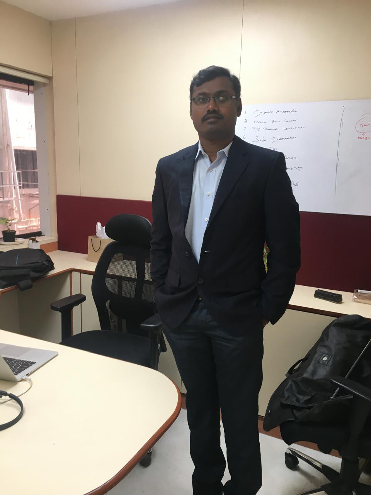

FOUNDING OWNER · Kovai Kings
Gopi Ramadoss
Gopi Ramadoss is the Founding Owner of Kovai Kings.
Owner Profile
Gopi supports the establishment of Kovai Kings as a professionally managed youth-cricket franchise within TNYPL.
TNYPL Commitment
His role is centered on owner participation, team identity, player opportunity and building a competitive inaugural-season squad.
Additional Biography
Further professional background and an owner message can be added when supplied.